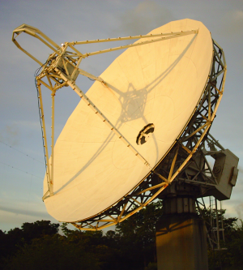

Rádio Observatório Espacial do Nordeste
Sobre o meu trabalho

O Rádio Observatório foi instalado no início da década de 90 e é um dos observatórios mais importantes para a Rede mundial de VLBI.
Funciona como um marco que serve de referência para medidas geodésicas. A partir dessas medidas é possível, por exemplo, medir deslocamento de placas tectônicas, estudar sobre a órbita da terra e sua posição no espaço. O que contribui para o funcionamento de equipamentos essenciais no nosso dia a dia como o GPS.
Em uma parceria entre a NASA, a AEB e o Instituto Mackenzie o Observatório é mantido por uma equipe de profissionais dedicados que cuidam da manutenção do observatório, coleta de dados e envio aos correlatores internacionais, que tratam os dados de todas as estações ao redor do mundo para produzir as pesquisas da rede IVS.
Pontos para instalação da antena VGOS
O Rádio Observatório deve receber em breve a instalação de um novo equipamento.
Trata-se da antena do sistema VGOS que é uma evolução da tecnologia VLBI que utilizava e ainda utiliza as antenas LEGACY. As novas antenas VGOS oferecem mais modernidade e possibilidade de gravação de mais dados no intervalo de uma sessão de observação de VLBI.
A equipe do ROEN está levantando as possibilidades para a localização da nova antena. Até então existem três locais candidatos, que estão referenciados a baixo.